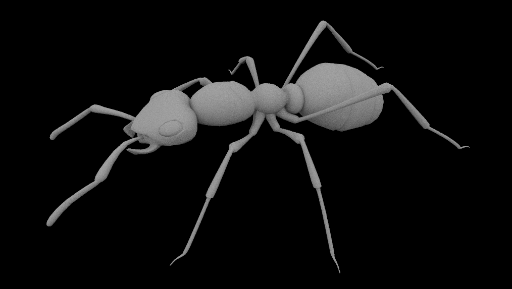

Project Name: Magnifying Lens
Progress: So far we've researched the properties of magnifying glasses (the details of which are in the slides linked). We also found an ant model which we've utilized in Blender to make our scene. This ant model mesh used rectangles, so we modified the Pathtracer code to split apart rectangles so that bounding volume hierarchy worked for the render.
Preliminary Results: Below is the ant model we will use rendered using the Pathtracer. Our current code is based on p3-1 so the ant is rendered with lambertian material, and we will migrate over to p3-2 to allow rendering of glossy/mirror materials as well as microfacet materials.
Updated Plan:
We created several scenes with ants in Blenber, but we are facing a few hurdles handling exported Collada (.dae) files from Blender.
This is slowing down our scene generation and setting us a little behind our original plan.
Our next step is to place a magnifying glass object at an appropriate location in the scene (according to our research on magnification).
We already understand where to process paramters in main.cpp, so incorporating input parameters will be easy to handle.
At this rate, achieving all of our stretch goals will be difficult, but we can definitely implement depth of field quickly.